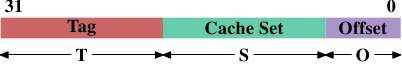

3.2. 高阶cache操作
我们必须结合第二节所学到的机器架构与 RAM 技术、以及前一节所描述的cache结构，以了解使用cache的开销与节约之处。
预设情况下，由 CPU 核读取或写入的所有资料都存在cache中。有些memory区域无法被cache，但只有操作系统实作者得去挂虑这点；这对应用程序开发者而言是不可见的。也有一些指令能令程序开发者刻意地绕过某些cache。这些将会在第六节中讨论。
假如 CPU 需要一个资料字组，会先从cache开始搜寻。显而易见地，cache无法容纳整个主memory的内容（不然我们就不需要cache），但由于所有memory地址都能被cache，所以每个cache项目（entry）都会使用资料字组在主memory中的地址来标记（tag）。如此一来，读取或写入到某个地址的请求便会在cache中搜寻符合的标籤。在这个情境中，地址可以是虚拟或实体的，视cache的实作而有所不同。
除了真正的memory之外，标籤也会需要额外的空间，因此使用一个字组作为cache的粒度（granularity）是很浪费的。对于一台 x86 机器上的一个 32 位元字组而言，标籤本身可能会需要 32 位元以上。再者，由于空间局部性是作为cache基础的其中一个原理，不将此纳入考量并不太好。由于邻近的memory很可能会一起被用到，所以它也应该一起被载入到cache中。也要记得我们在 2.2.1 节所学到的：假如 RAM 模组能够在不需新的 、甚至是 讯号的情况下传输多个资料字组，这是更有效率的。所以储存在cache中的项目并非单一字组，而是多个连续字组的「行（line）」。在早期的cache中，这些行的长度为 32 位元组；如今一般是 64 位元组。假如memory总线的宽度是 64 位元，这表示每个cache行要传输 8 次。DDR 有效地支援这种传输方式。
当memory内容为处理器所需时，整个cache行都会被载入到 L1d 中。每个cache行的memory地址会根据cache行的大小，以遮罩（mask）地址值的方式来计算。对于一个 64 位元组的cache行来说，这表示低 6 位元为零。舍弃的位元则用作cache行内的偏移量（offset）译注。剩馀的位元在某些情况下用以定位cache中的行、以及作为标籤。在实务上，一个地址值会被切成三个部分。对于一个 32 位元的地址来说，这看来如下：

一个大小为 2 的cache行，低 位元用作cache行内的偏移量。接下来的 位元选择「cache集（cache set）」。我们马上就会深入更多为何cache行会使用集合 –– 而非一个一组（single slot）–– 的细节。现在只要知道有 2 个cache行的集合就够。剩下的 位元组成标籤。这 个位元是与每个cache行相关联、以区分在同一cache集中所有别名（alias）18的值。不必储存用以定址cache集的 位元，因为它们对同个集合中的所有cache行而言都是相同的。
当一个指令修改memory时，处理器依旧得先载入一个cache行，因为没有指令能够一次修改一整个cache行（这个规则有个例外：合并写入〔write-combining〕，会在 6.1 节说明）。因此在写入操作之前，得先载入cache行的内容。cache无法持有不完全的cache行。已被写入、并且仍未写回主memory的cache行被称为「脏的（dirty）」。一旦将其写入，脏旗标（dirty flag）便会被清除。
为了能够在cache中载入新的资料，几乎总是得先在cache中腾出空间。从 L1d 的逐出操作（eviction）会将cache行往下推入 L2（使用相同的cache行大小）。这自然代表 L2 也得腾出空间。这可能转而将内容推入 L3，最终到主memory中。每次逐出操作都会越来越昂贵。这里所描述的是现代 AMD 与 VIA 处理器所优先采用的独占式cache（exclusive cache）模型。Intel 实作包含式cache（inclusive caches）19，其中每个在 L1d 中的cache行也会存在 L2 中。因此，从 L1d 进行逐出操作是更为快速的。有了足够的 L2 cache的话，将内容存在两处而造成memory浪费的缺点是很小的，而这在逐出操作时会带来回报。独占式cache的一个可能的优点是，载入一个新的cache行只需碰到 L1d 而不需 L2，这会快上一些。
只要为了处理器架构而规定的memory模型没有改变，CPU 是被允许以它们想要的方式来管理cache的。举例来说，善用少量或没有memory总线活动的时段，并主动地将脏的cache行写回到主memory中，对处理器来说是非常好的。x86 与 x86-64 –– 不同厂商、甚至是同一厂商的不同型号之间 –– 的处理器之间有著各式各样的cache架构，证明memory模型抽象化的能力。
在对称式多处理器（Symmetric Multi-Processor，SMP）系统中，CPU 的cache无法独立于彼此运作。所有处理器在任何时间都假定要看到相同的memory内容。这种memory一致观点的维持被称为「cache一致性（cache coherency）」。假如一个处理器只看它自己拥有的cache与主memory，它就不会看到其它处理器中的脏cache行的内容。提供从一个处理器到另一个处理器cache的直接存取会非常昂贵，而且是个极大的瓶颈。取而代之地，处理器会在另一个处理器要读取或写入到某个cache行时察觉到。
假如侦测到一次写入存取，并且处理器在其cache中有这个cache行的干净副本，这个cache行就会被标为无效（invalid）。未来的查询会需要重新载入这个cache行。注意到在另一颗 CPU 上的读取存取并不需要进行无效化，多个干净副本能够被保存得很好。
更加复杂的cache实作容许其它的可能性发生。假设在一个处理器cache中的一个cache行是脏的，并且第二个处理器想要读取或写入这个cache行。在这个情况下，主memory的内容太旧，而请求的处理器必须 –– 作为替代 –– 从第一个处理器取得cache行的内容。第一个处理器经由窥探注意到这个状况，并自动地将资料寄送给请求的处理器。这个动作绕过主memory，虽然在某些实作中，是假定memory控制器会注意到这个直接传输、并将更新的cache行内容储存到主memory中。假如是为了写入而进行存取，第一个处理器便会将它的区域cache行的副本无效化。
许多cache一致化的协议随著时间被逐渐发展出来。最重要的为 MESI，我们将会 3.3.4 节中介绍它。这所有的结果可以被总结为一些简单的规则：
- 一个脏的cache行不会出现在任何其它处理器的cache中。
- 相同cache行的干净副本能够存在任意数量的cache中。
假如能够维持这些规则，即便在多处理器的系统中，处理器也能够高效地使用它们的cache。所有处理器所需要做的，就是去监控其它处理器的写入存取，并将这个地址与它们区域cache中的地址做比较。在下一节，我们将会深入更多实作、尤其是成本的一些细节。
最后，我们该至少给个cache命中（hit）与错失（miss）相关成本的印象。这些是 Intel 针对 Pentium M 列出的数字：
| 到 | 周期 |
|---|---|
| 暂存器 | <= 1 |
| L1d | ~3 |
| L2 | ~14 |
| 主memory | ~240 |
这些是以 CPU 周期测量的实际存取时间。有趣的是，对内建于晶片上的 L2 cache而言，大部分（甚至可能超过一半）的存取时间都是由线路延迟造成的。这是一个只会随著cache大小变大而变糟的实体限制。只有制程的缩小（举例来说，从 Intel 系列中 Merom 的 60nm 到 Penryn 的 45nm）能提升这些数字。
表格中的数字看起来很大，但 –– 幸运地 –– 不必在每次发生cache载入与错失时都负担全部的成本。一部分的成本可以被隐藏。现今的处理器全都会使用不同长度的内部管线，指令会在其中被解码、并且为执行而准备。部份的准备是从memory（或cache）载入值，假如它们要被传输到暂存器的话。假如memory载入操作能够足够早就在管线中开始，它也许会与其它操作平行进行，而整个载入成本就可能被隐藏。这对 L1d 经常是可能的；对某些有著长管线的处理器来说，L2 亦是如此。
提早开始memory读取有著诸多阻碍。也许简单得像是没有足够的资源来存取memory，或者可能是载入的最终地址之后才会作为另一个指令的结果取得。在这些情况中，载入成本无法被（完全地）隐藏。
对于写入操作，CPU 不必一直等到值被安然地储存进memory中为止。只要接下来指令的执行就像是与值已被存入memory有著似乎相同的效果，就没有什么能阻止 CPU 走捷径。它能够早点开始执行下个指令。有著影子暂存器（shadow register）–– 其能够持有一般暂存器无法取得的值 –– 的帮助，甚至可能改变未完成的写入操作所要储存的值。

有关cache行为影响的图表，见图 3.4。我们稍候会谈到产生资料的程序；这是个不停地以随机的方式存取可控制memory总量的程序的简易模拟。每笔资料有著固定的大小。元素的数量视选择的工作集大小而定。Y 轴表示处理一个元素所花费的 CPU 周期的平均；注意到 Y 轴为对数刻度。这同样适用于所有这类图表的 X 轴。工作集的大小总是以二的幂次表示。
这张图显示三个不同的平稳阶段。这并不让人意外：这个处理器有 L1d 与 L2 cache，但没有 L3。经由一些经验，我们可以推论这个 L1d 大小为 213 位元组，而 L2 大小为 220 位元组。假如整个工作集能塞进 L1d 中，对每个元素的每次操作的周期数会低于 10。一旦超过 L1d 的大小，处理器就必须从 L2 载入资料，而平均时间则迅速成长到 28 左右。一旦 L2 也不够大，时间便飙升到 480 个周期以上。这即是许多、或者大部分操作必须从主memory载入资料的时候。更糟的是：由于资料被修改，脏的cache行也必须被写回。
这张图应该有给予探究程序撰写上的改进、以协助提升cache使用方式的充分动机。我们在这里所谈论的并不是几个少得可怜的百分点；我们说的是有时可能的几个数量级的提升。在第六节，我们将会讨论能让我们写出更有效率的程序的技术。下一节会深入更多 CPU cache设计的细节。有这些知识很好，但对于本文其余部分并非必要。所以这一节可以跳过。
译注. 用来作为cache行内某个字组的索引。 ↩
18. 所有地址有著相同 部分的cache行都被视为相同的别名。 ↩
19. 这个概括并不完全正确。一些cache是独占式的，而部分包含式cache具有独占式cache的特性。 ↩